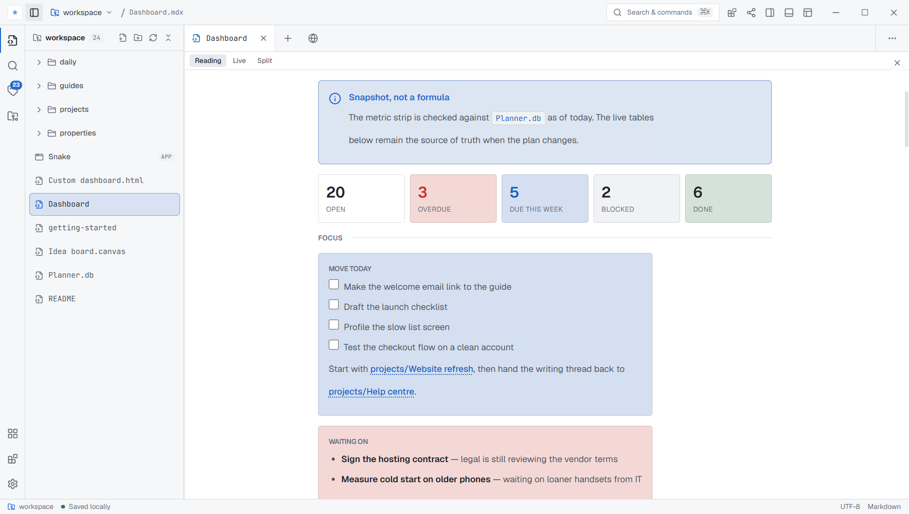

Plain files, always
Every note is Markdown or MDX on your own filesystem. Point Neuron at an existing folder and close it again whenever you like — nothing is rewritten, converted or locked.
Apache-2.0 · open source · no account required
Neuron is a local-first workspace for Markdown and MDX. Databases, canvases and sandboxed views sit on top of a folder you already own — and everything still opens in any other editor.
Free forever. No telemetry, no sign-in, no cloud round-trip.

.md Markdown
.mdx Components
.canvas JSON Canvas
.db Plain-JSON tables
.html Sandboxed views
The problem
Export gives you a zip of HTML and a folder of images with hashed names. The links between notes do not survive the trip.
Work only exists once a server acknowledges it. When sync stalls or conflicts, there is nothing on disk to fall back to.
The moment notes need a table, a board or a dashboard, you are asked to move the content somewhere else entirely.
The solution
Every note is Markdown or MDX on your own filesystem. Point Neuron at an existing folder and close it again whenever you like — nothing is rewritten, converted or locked.
A .db file is readable JSON with typed columns, select
options and multiple tables. Table and board views render from it, and
git diff still tells you what changed.
Spatial boards use JSON Canvas, so the same file opens in Obsidian and anything else that speaks the format.
Drop an .html file in and it renders as a live view in an
isolated process — no Node, its own partition, and access only to the
paths its manifest declares. You approve that list before it runs.
A write journal captures the previous contents before anything is overwritten, so version history works even for files edited outside the app.
No account, no telemetry, no background sync. AI is optional, off by default, and uses a key you supply and can revoke.
Download
Loading…
Loading…
Loading…
Verify
Every release carries SHA-256 checksums and a signed build provenance attestation naming the exact workflow, commit and runner that produced each file. Unlike a signature, provenance cannot be forged by re-signing a tampered installer.
Windows and macOS builds are not signed with a paid certificate yet, so both systems will warn you on first launch. Here is exactly what you will see, and how to proceed.
# Provenance: proves which workflow built it gh attestation verify Neuron-0.4.3-win-x64.exe \ --repo shiv-khetan/Neuron # Checksums: proves the bytes are unchanged sha256sum -c SHA256SUMS.txt --ignore-missing